As seen in
Press
- People
- Us Weekly
- Women’s Wear Daily
- Modern Jeweler
- In Touch Weekly
- FrontDesk
- Town & Country
- Neiman Marcus
- SHAPE
- Life & Style Weekly
- The New York Times
- Brides
- Palm Beach Life
- WeddingChannel.com
- GQ
- ForbesWoman
- Celebrity Living Weekly
- Star
- Newspaper clippings
- Shop Etc.
- Gotham
- The Record-Review
- W
- Accessories
-
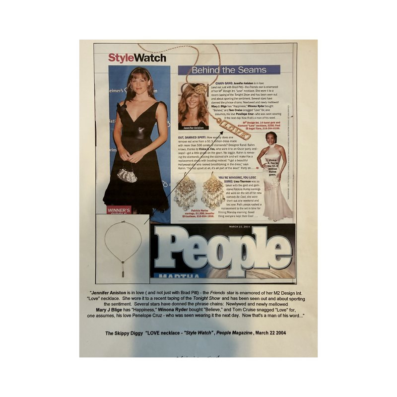
People
Read the article -
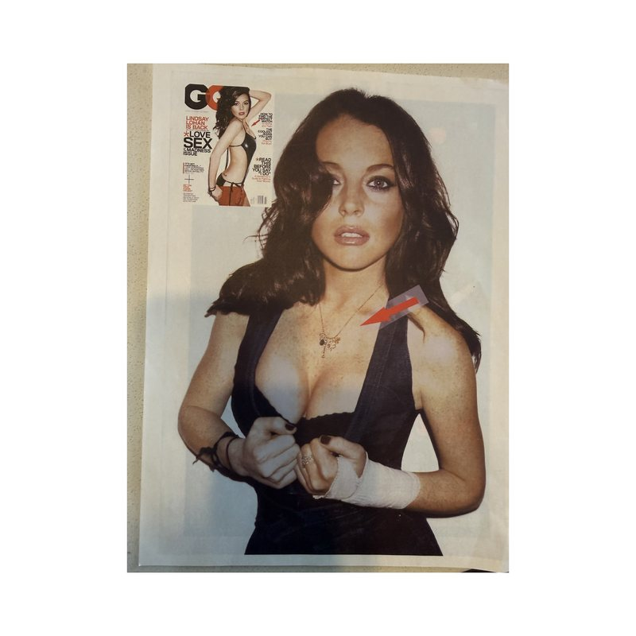
GQ
Read the article -
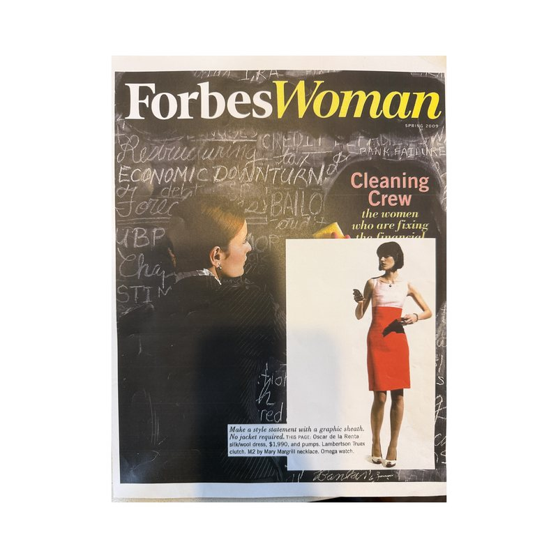
ForbesWoman
Read the article -
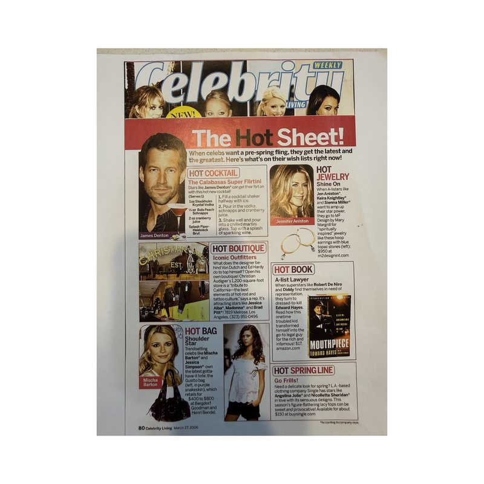
Celebrity Living Weekly
Read the article -
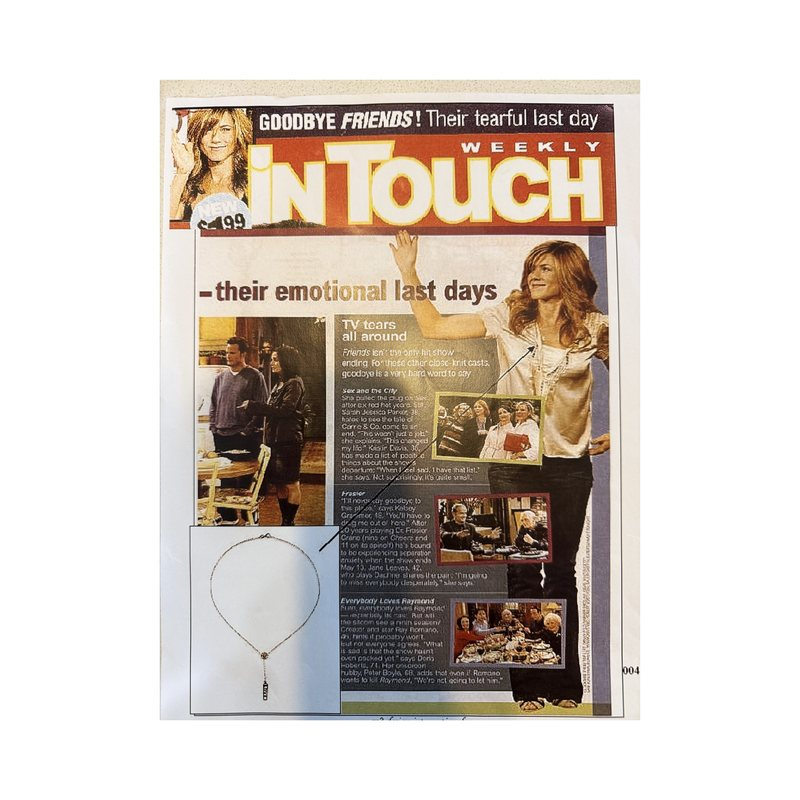
In Touch Weekly
Read the article -
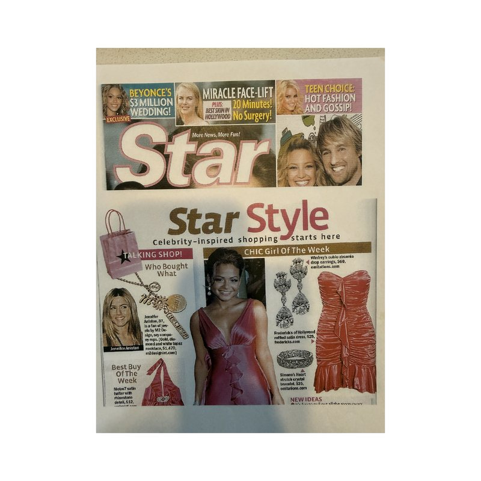
Star
Read the article -
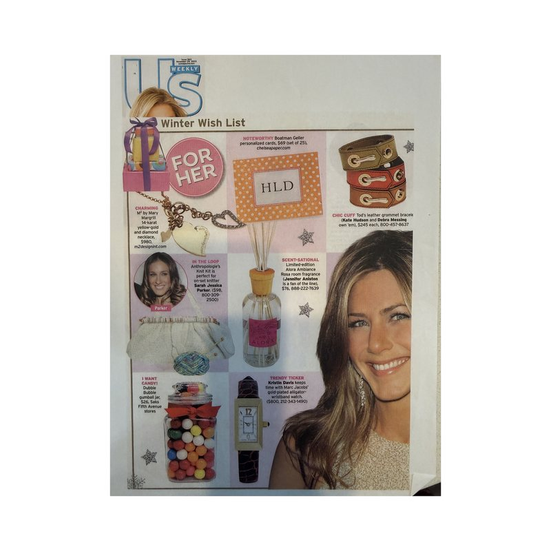
Us Weekly
Read the article -
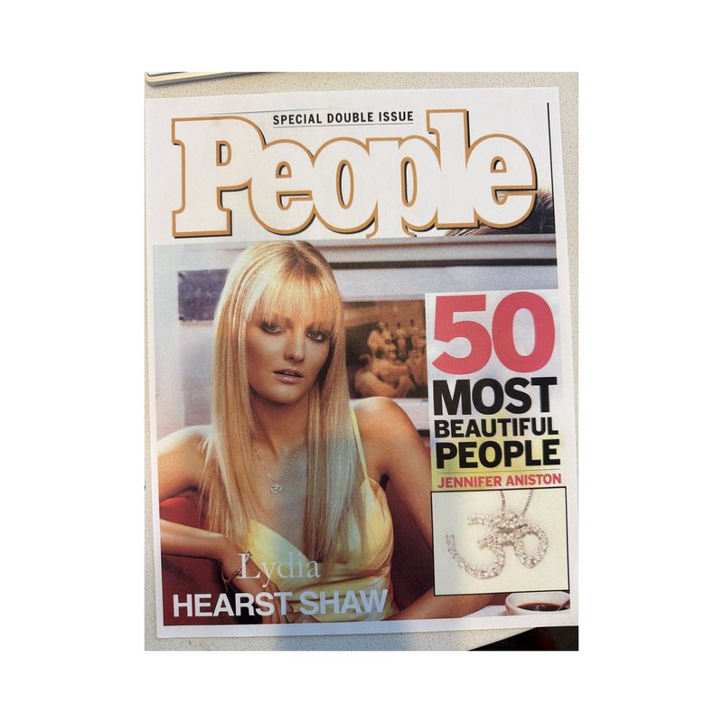
People
Read the article -
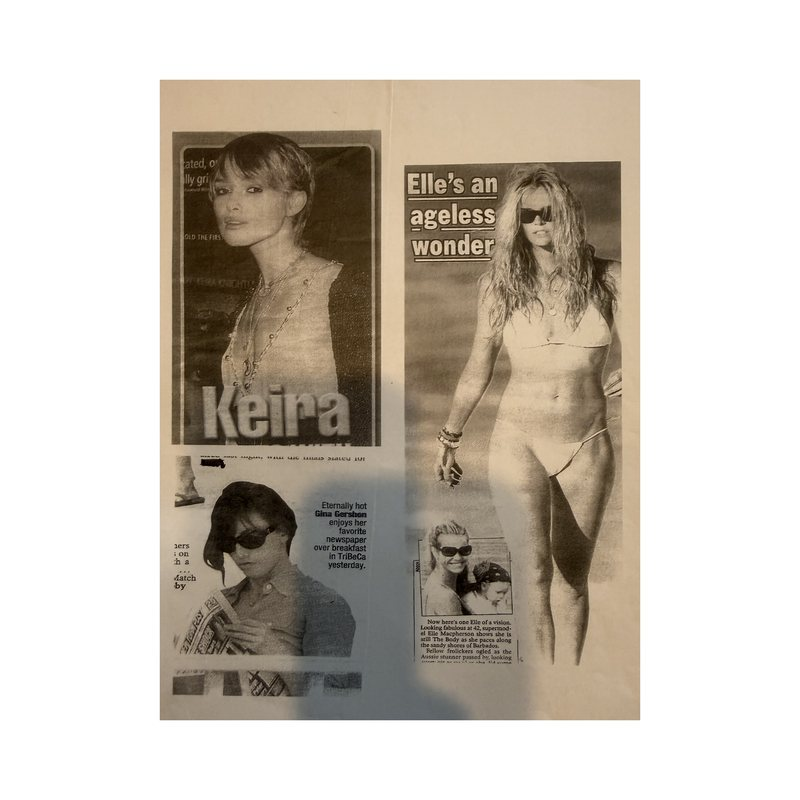
Newspaper clippings
Read the article -
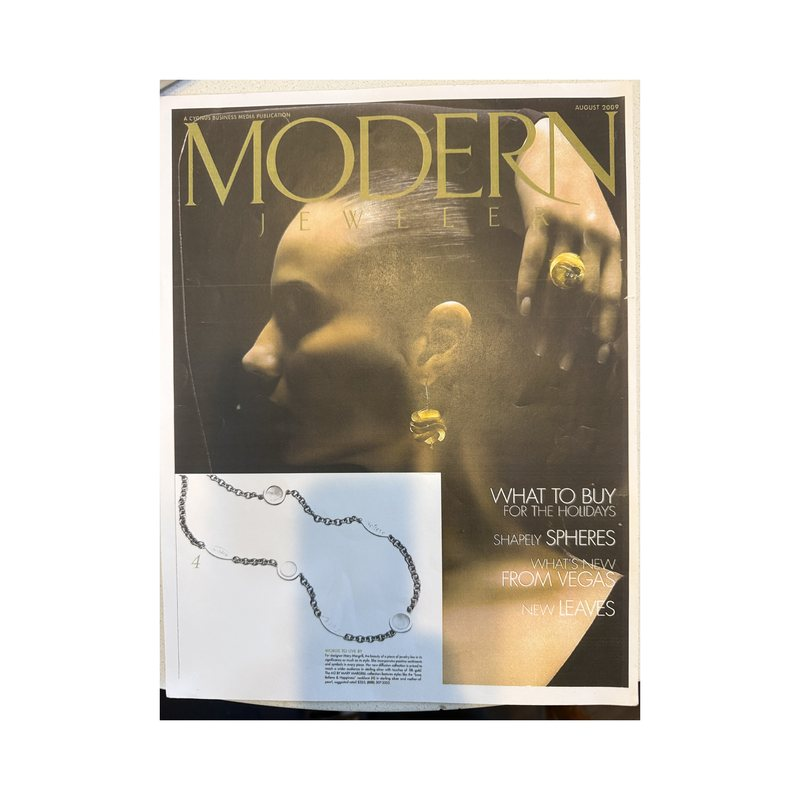
Modern Jeweler
Read the article -
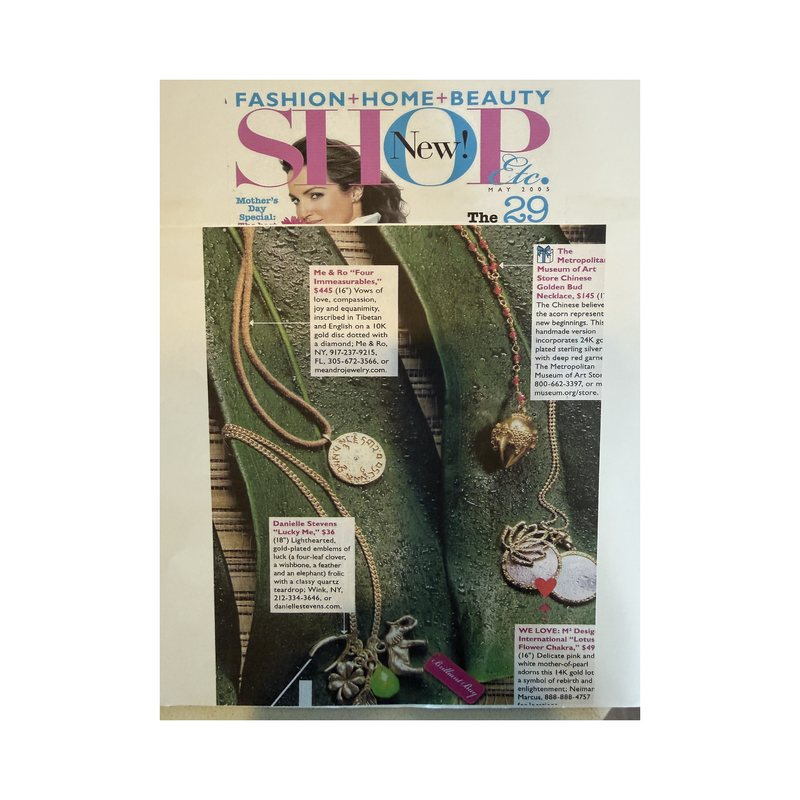
Shop Etc.
Read the article -
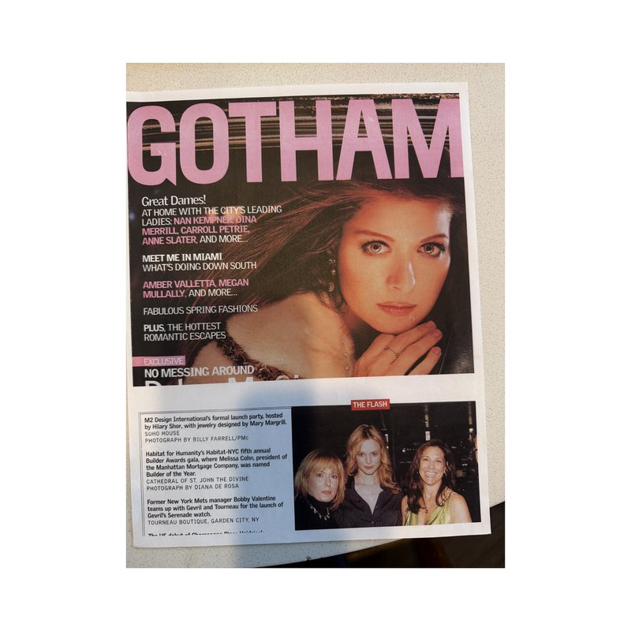
Gotham
Read the article -
The Record-Review
Read the article -
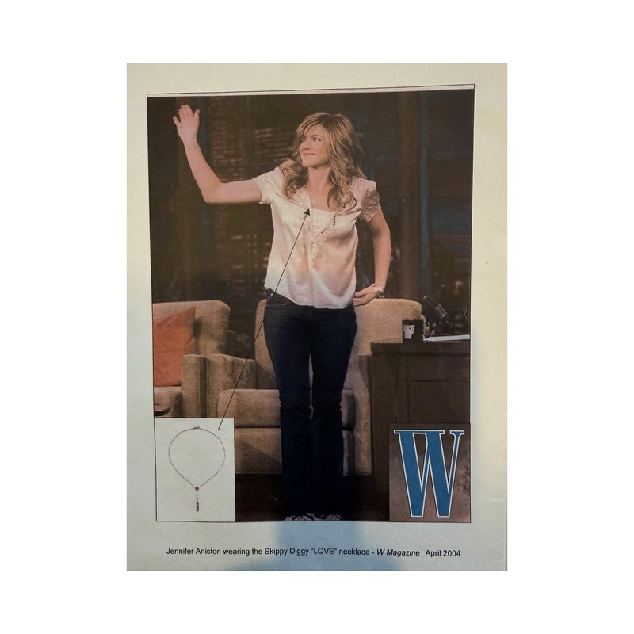
W
Read the article -
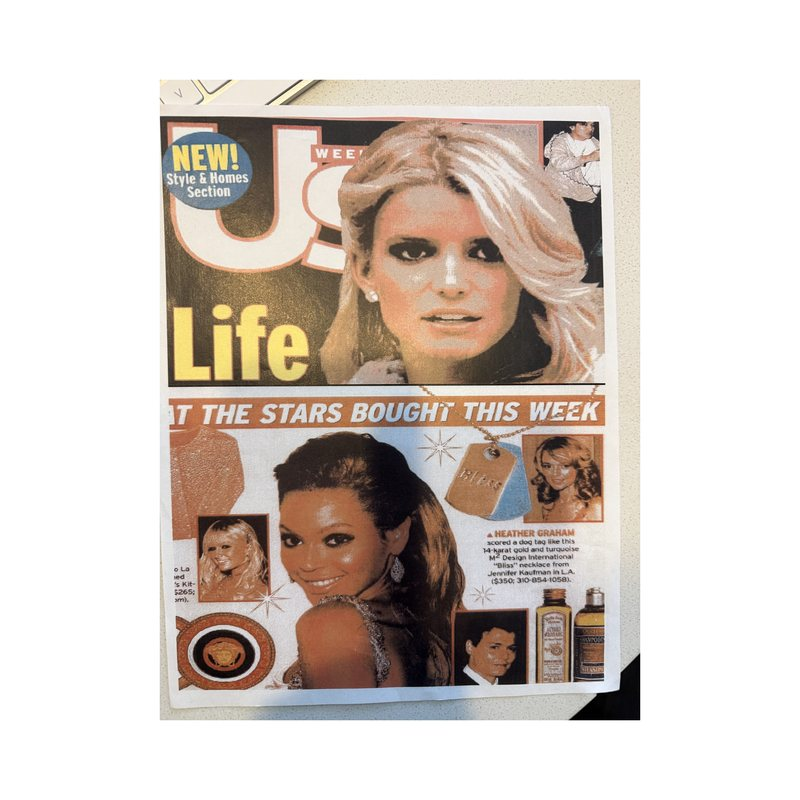
Us Weekly
Read the article -
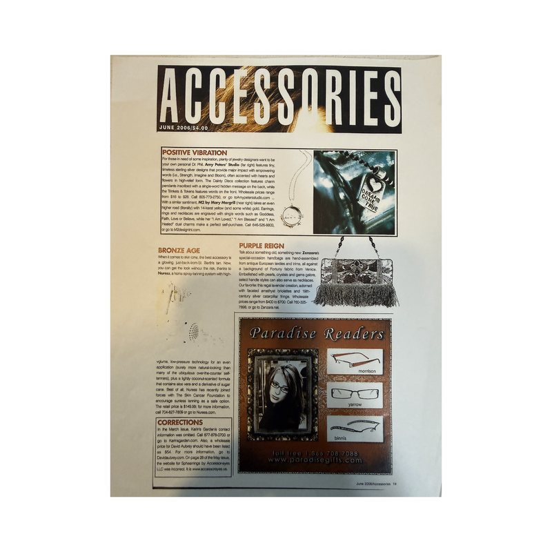
Accessories
Read the article -
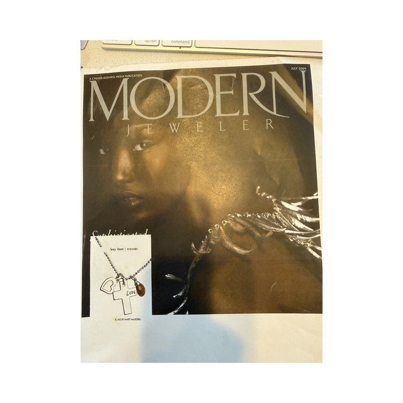
Modern Jeweler
Read the article